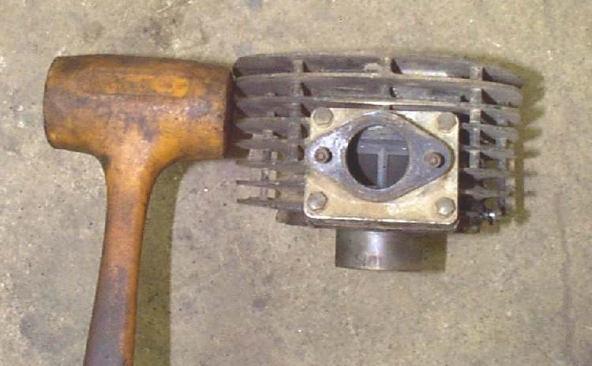
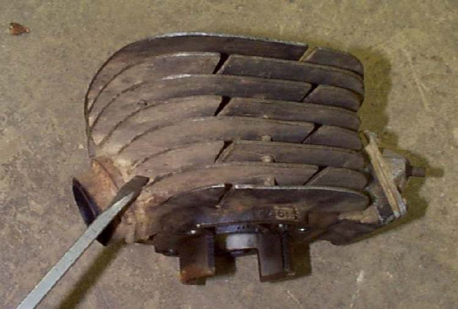

An air-cooled cylinder can stick to the crankcase or head after years of heat. Cooling fins look strong but are brittle and thin. A blow in the wrong place or at the wrong angle breaks a fin right off. A blow aimed straight along the fin, or on a thick boss, rarely does damage. This page explains where to strike and how, before any pry or hammer is used on a cylinder.
Safety
- Wear eye protection. Metal chips can fly.
- Support the engine so it cannot fall. A stuck barrel that suddenly frees can drop and hurt your hand.
- Remove the head bolts and the base nuts first, and check that nothing still holds the cylinder.
You need
- A soft mallet or a rubber mallet.
- A wood block to take the blow.
- Good light to see where the fins are thick and where they are thin.
Steps
- Check the cylinder is free of all fasteners and that the engine is supported.
- Find the strongest points: the thick flange, the base boss or a block where the stud holes are cast. Mark them.
- Hit straight on, square to the surface, never at an angle. A square blow along the fin is carried into the casting. An angled blow bends the fin and snaps it.
- Use short, firm blows with a soft mallet. Use a wood block between a hard hammer and the casting.
- Never use a screwdriver or chisel to pry at the base of a fin or at its tip. If you must lever, lever against a thick boss.
- Rock the barrel gently as it begins to move. Lift it straight up and off the studs, supporting it with both hands.
Check your work
- No fins are cracked or missing.
- Sealing surfaces are clean and not dented.
If it will not move
- Do not increase the force. Soak the joint with penetrating oil and wait, then try again.
- If it still sticks, go to a workshop. See Assess the top end.